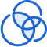

Infra Solution
Data Security & HCI

CrowdStrike
CrowStrike Falcon
클라우드 기반의 엔드포인트 보호 플랫폼으로 바이러스 백신, 엔드포인트 탐지 및 대응(EDR), 관리형 위협 사냥 등 다양한 보안기능을 제공합니다.
첨단 인공지능과 기계 학습 알고리즘을 사용하여 실시간으로 사이버 공격을 탐지하고 예방합니다.
서린정보기술은 글로벌 EDR 1위 벤더 업체와의 협약으로 고객사에게 필요한 EDR 라이센스를 제공합니다.
주요 장점
실시간 보호
인공 지능과 머신 러닝을 사용하여 위협을 실시간으로 탐지하고 방지하여 엔드포인트를 지속적으로 보호합니다.
클라우드 기반 아키텍쳐
클라우드 기반 플랫폼으로 구축 및 관리가 용이하며 조직의 요구사항을 충족할 수 있는 확장성과 유연성을 제공합니다.
가시성 및 제어
엔드포인트 활동에 대한 가시성을 제공하여 위협을 모니터링하고 조사할 수 있으며 엔드포인트에 대한 제어 기능을 제공하여 위협을 예방하고 대응할 수 있습니다.
위협 인텔리전스
위협 인텔리전스를 활용하여 최신 위협에 대한 최신 정보를 제공하여 공격자보다 앞서고 조직을 보호할 수 있도록 지원합니다.
Nutanix
HCI?
하이퍼 컨버지드 인프라 (Hyper-Converged Infrastructure, HCI)의 준말로 컴퓨팅, 스토리지, 네트워크,
가상화를 비롯한 전체 데이터 스택을 통합한 어플라이언스(Appliance) 입니다.
Nutanix는 이러한 HCI 아키텍처의 장점을 극대화하여 조직이 멀티 클라우드 아키텍처를 구축하고 운영할 수 있도록 인프라 솔루션을 제공합니다.
주요 장점

확장성
요구 사항의 변화에 따라 인프라를 쉽게 확장할 수 있으므로 유연성과 민첩성을 제공합니다.
단순화된 관리
인프라의 모든 측면을 관리할 수 있는 단일 플랫폼을 제공하여 보다 쉽게 관리하고 오류 위험을 줄입니다.

향상된 성능
하이퍼컨버전스 및 소프트웨어 정의 스토리지와 같은 고급 기술을 사용하여 인프라의 성능을 향상시켜 애플리케이션 및 워크로드를 보다 효율적으로 실행할 수 있습니다.

비용절감
하드웨어를 통합하고 전문 인력의 필요성을 줄임으로써 조직의 인프라 비용을 절감할 수 있습니다.